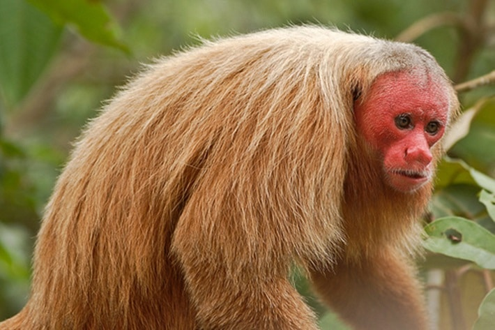
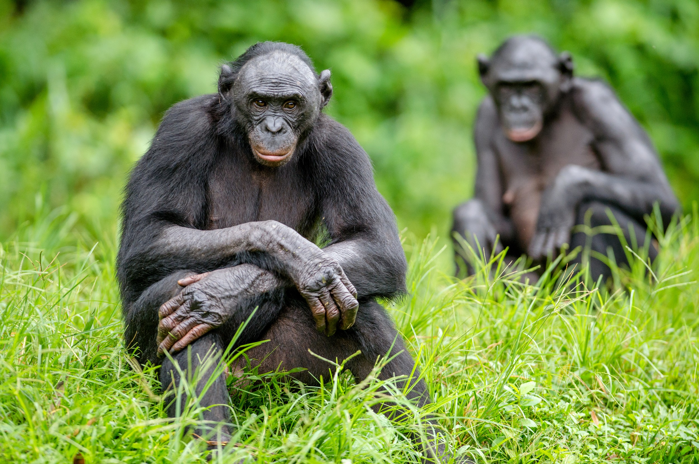
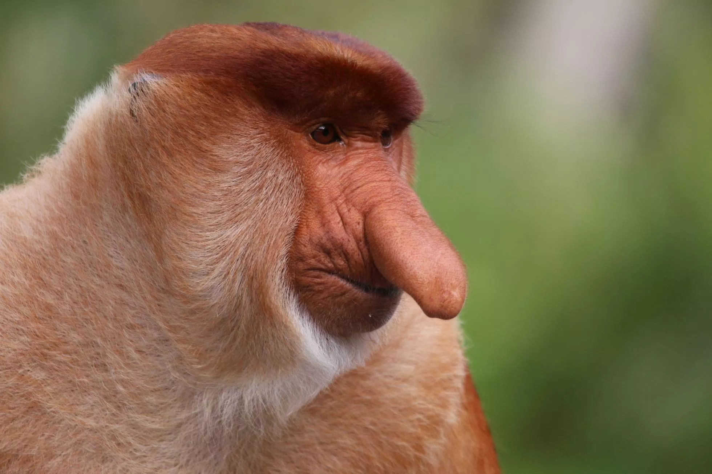
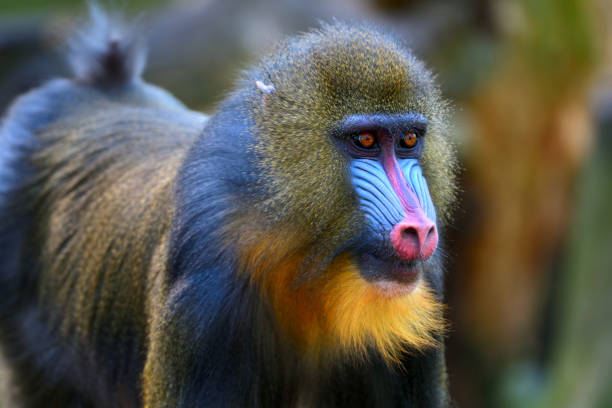
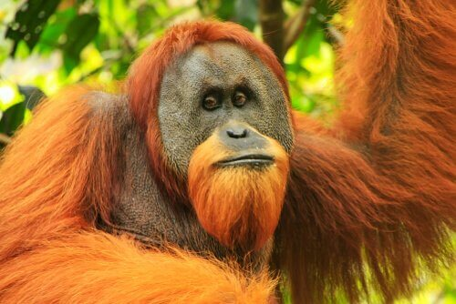

Fotos Primáticas
Macaco inglês (Cacajao calvus)
Chimpanzé (Pan troglodytes)
Gorila (Gorilla gorilla gorilla)


Macaco-narigudo (Nasalis larvatus)

Babuíno (Papio anubis)

Orangotango (Pongo pygmaeus)